GEM-Selektor version 2-PSI GEM-Selektor version 2-PSI
GEM-Selektor version 2-PSI GEM-Selektor version 2-PSIPrevious Page Back to Start Page
(31)
Adding a reaction-defined Dependent Component
(ReacDC) record.
An
alternative way
to describe thermodynamic properties of a chemical species is to write
a
reaction of its formation (or decomposition) that involves other
species with
data already existing in the GEMS database. Given that the molar
effects of
this reaction are known, molar properties of the species of interest
can be
algebraically calculated at any temperature. This can be done in GEMS
package
by creating a ReacDC record.
As usual, the
easiest way to add a reaction-defined dependent component to the
project database is to open a similar record in the ReacDC window and
"clone" it, edit necessary data fields and save to the database
file.
Let us start
with creating a ReacDC record for the mineral witherite. A suitable
template
would be an available record for rhodochrosite MnCO3. To
open
it in the ReacDC window, get into the "Database Management" dialog and
click
the "Dependent Components (ReacDC)" button, then use the "Display
Selected
record" toolbar button
to get a list of ReacDC records:
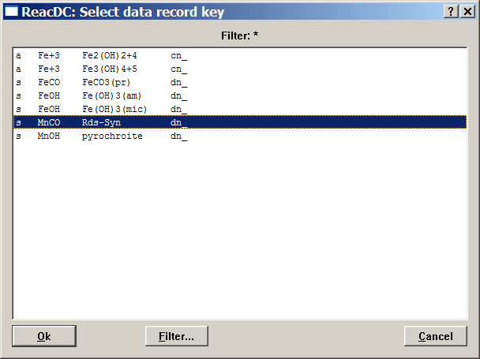
Find and
select a "Rds-Syn" record key, as shown above, and double-click on it
or click
the "Ok" button. This will get the data for synthetic rhodochrosite MnCO3
in the ReacDC window:
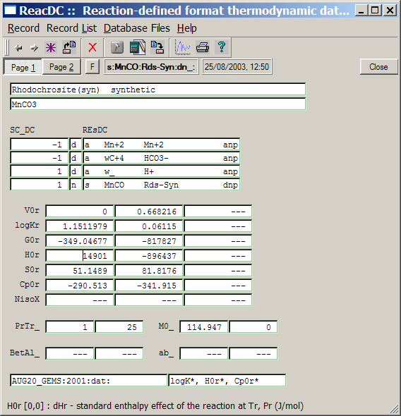
What you see
is Page 1 with name and fomula of the compound (MnCO3),
reaction coefficients (SC_DC) and record keys of
involved components (REsDC), effects of the
reaction (e.g. H0r[0]), standard molar properties
of the compound, and bibliographic references. Click on the "Page 2"
button to see the second page with some more data; as
usual, you can examine tooltips and F1 help
pages
to learn about the meaning of data fields.
Now, let us return to Page 1 and execute the "Record" "New(Clone)..." menu command. Modify the key of the record to be created as shown below and click "Ok":
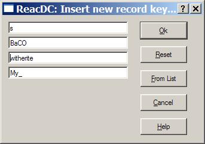
Next, a
"ReacDC Setup" wizard appears; there is nothing to re-configure in this
case,
so just click "Next >" to proceed.
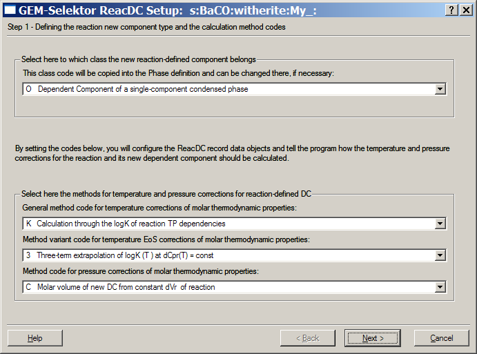
This brings
about the second page of the wizard; click "Next >" again.
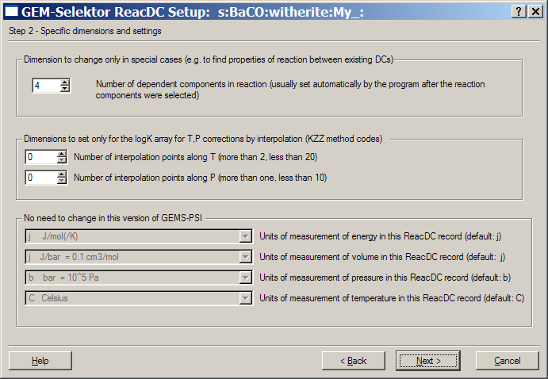
The final
page of the ReacDC wizard (below) contains some useful
explanations. After reading them, click "Finish".
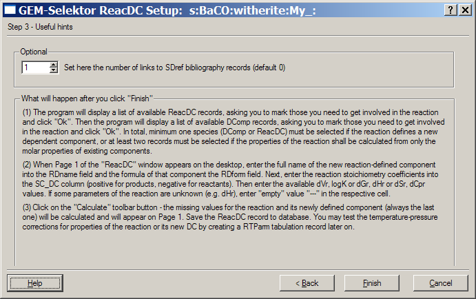
Next,
the program will show you a list of available ReacDC records and ask to
mark those to be included in the reaction (to remind, the reaction is Ba+2 + HCO3-
= BaCO3(s) + H+ ).
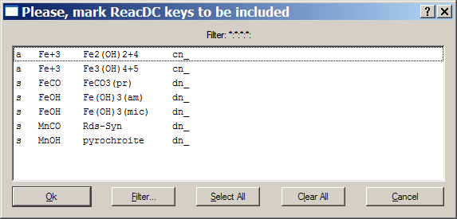
Note that witherite will
be automatically
made as the last component in the reaction, so we have to include Ba+2, HCO3-
, and H+ aqueous
species only. Since they do not appear in the list above, there is
nothing
to select, so click on the "Clear All" and then "Ok" button. The
program
will immediately display another multiple selection list of available
DComp
records that can be included into the definition of our reaction:
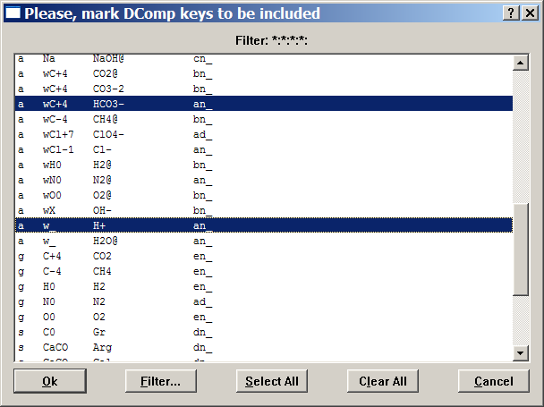
Click on the
"Clear All" button and scroll the list to find and mark (by a left
mouse click) the entries for Ba+2, HCO3-
, and H+ aqueous
species (as shown above). Click on "Ok" button when finished.
This will finally get you back into the ReacDC window that still
contains data for MnCO3 solid that we now have to edit in
order to replace it with the data for synthetic witherite (see the
beginning of this page). Put the "Empty" value ("---") into all cells
where you have no data to enter. Do not forget to change the formula to
"BaCO3" and
to check the reaction stoichiometry coefficients. Now, Page 1 should
look
like this:
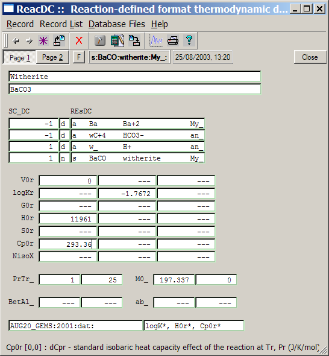
To complete
data in the new record, click on the "Calculate record data"  toolbar button or press F9 hot key or
execute "Record" "Calculate" menu command. A warning
appears:
toolbar button or press F9 hot key or
execute "Record" "Calculate" menu command. A warning
appears:
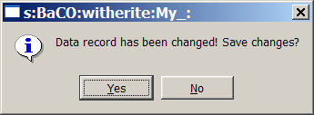
Click on the
"Yes" button to save the data that you have edited. The necessary
calculations will be performed, and you will see the ReacDC window
again with many data items restored:
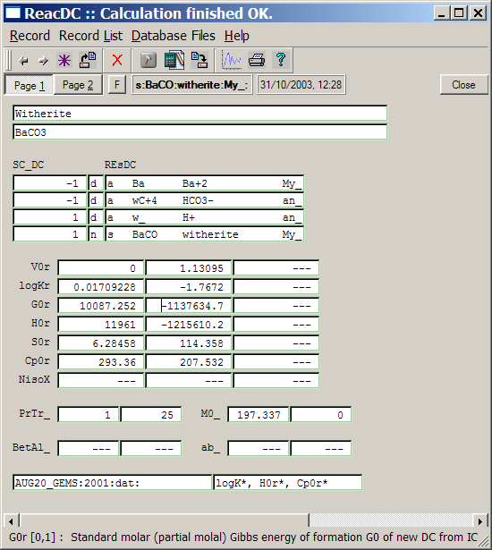
If you get
these or similar numbers, click on the "Save current record" toolbar
button or execute the "Record"
"Save" menu command to save data into the database file. Close the
ReacDC window when finished.
In the same way, you can "clone" ReacDC records for any other dependent components provided with logK or other reaction effects, if necessary. Remember that formulae of neutral aqueous species in GEMS are written using '@' instead of '0' at the end, i.e. the formula of BaCO30 should be wrtitten as BaCO3@.
Back to main GEMS-PSI page